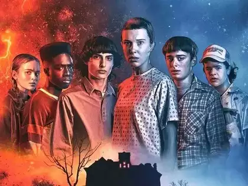
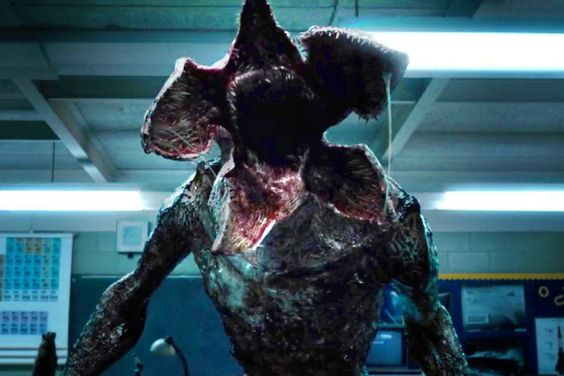

"Stranger Things" is a sci-fi horror series set in the 1980s in the small town of Hawkins, Indiana. The story kicks off when a young boy named Will Byers vanishes mysteriously. His mother, Joyce, becomes frantic, convinced that Will is communicating with her through flickering lights and strange occurrences in their home.
Meanwhile, Will's friends, Mike, Lucas, and Dustin, begin their own search and encounter Eleven, a girl with a shaved head and supernatural abilities. Eleven has escaped from a secretive government lab, and her powers become crucial in unraveling the mystery. The boys discover that Will is trapped in a parallel dimension called the Upside Down, inhabited by a terrifying creature called the Demogorgon.
As the town grapples with the bizarre happenings, Chief Jim Hopper uncovers the lab's sinister experiments, which have opened a portal to the Upside Down. With Eleven's help, the group manages to rescue Will and temporarily close the portal.
Throughout the series, the characters face new threats from the Upside Down, including monstrous entities like the Mind Flayer. They also contend with human antagonists from the government and the lab, all while navigating the challenges of growing up. Themes of friendship, bravery, and the supernatural weave together to create a nostalgic yet thrilling narrative that captivates audiences.
In "Stranger Things," the Demogorgon is a monstrous creature from the Upside Down, a parallel dimension. It is humanoid with a flower-like head full of sharp teeth, strong, agile, and can move between dimensions. It hunts by sensing blood and is responsible for Will Byers' disappearance and Barb Holland's death. Eleven, using her telekinetic powers, defeats the Demogorgon, setting the stage for future threats from the Upside Down.